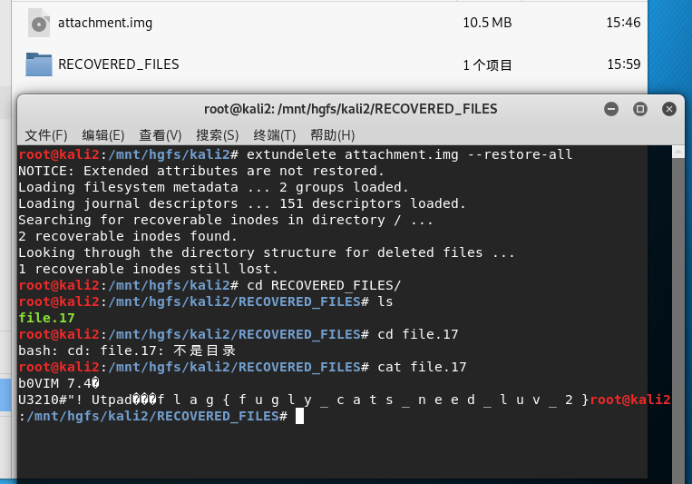
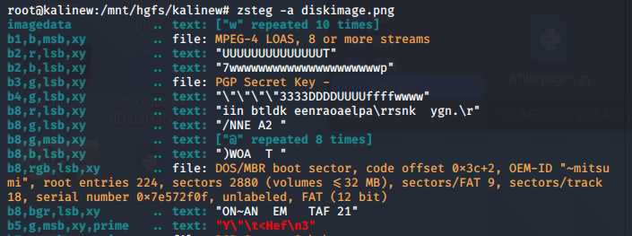
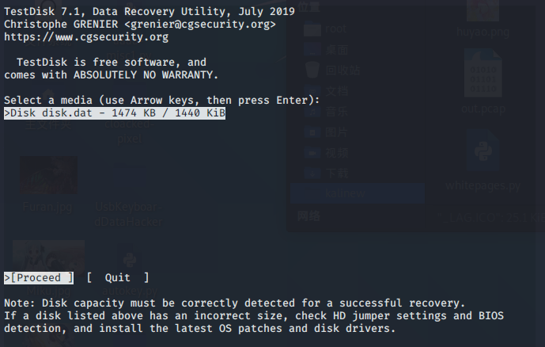
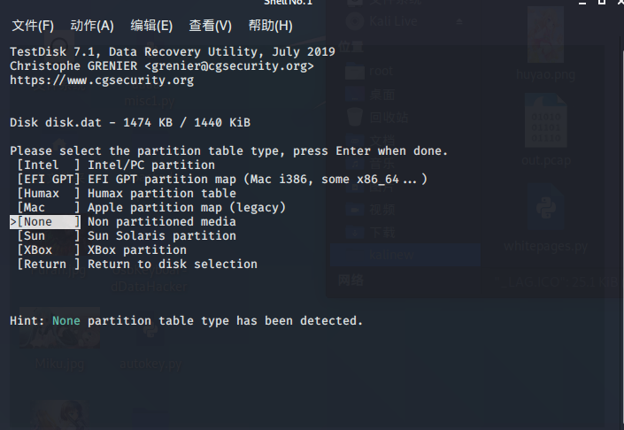
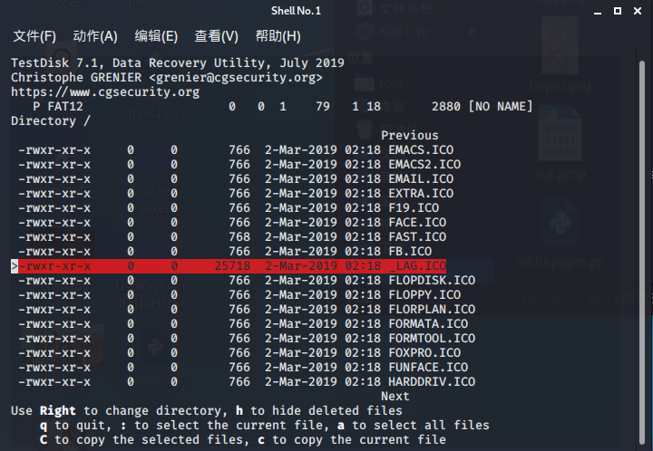
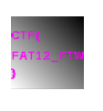
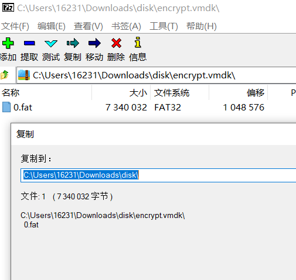
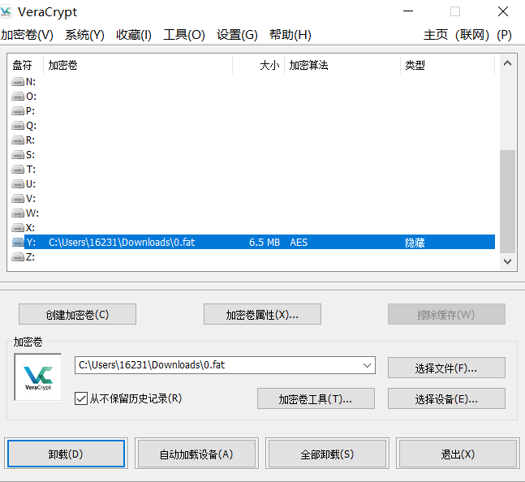
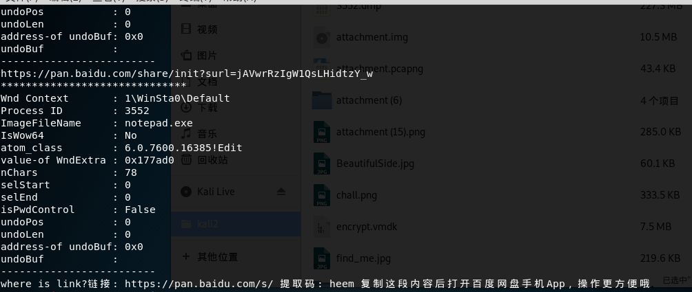
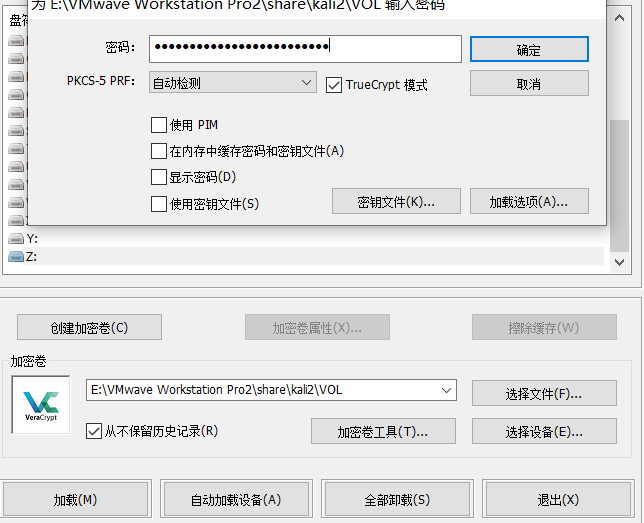

MISC-data-2
Data[2]
21
[XMAN2018排位赛]file
得到的 flag 请包上 flag{} 提交。来源：https://github.com/hebtuerror404/CTF_competition_warehouse_2018
得到attachment.img
第一感觉是volatility,失败
学到了新招
extundelete attachment.img --restore-all |
恢复被删除的目录或文件
得到RECOVERED_FILES/file.17

flag{fugly_cats_need_luv_2} |
22
greatescape
得到的 flag 请包上 flag{} 提交。
不明所以，稍作记录。
得到一个数据包，通过追踪发现存在ssc.key，格式类似rsa私钥，另存为
编辑->首选项->protocols->TLS 把刚才的key通过本地导入
追踪http得到flag
23
[BSidesSF2019]diskimage
得到的 flag 请包上 flag{} 提交。
得到一张图片
binwalk foremost都无果的情况下
zsteg -a diskimage.png |

“b8,rgb,lsb,xy”中存在东西
zsteg -e 'b8,rgb,lsb,xy' diskimage.png > disk.dat |
导出
用testdisk进行分析

回车

回车

找到其中最与众不同的那一个
根据提示，按C拷贝到想要的位置
查看

得到flag
CTF{FAT12_FTW} |
24
[RCTF2019]disk
得到的 flag 请包上 flag{} 提交。
得到encrypt.vmdk
一时没有方向，拖进010看到
rctf{unseCure_quick_form4t_vo1ume
试图打开vmdk却被告知压缩包已损坏
这里学到一招，可以用7z
可以看到有一个0.fat
但无法直接操作
通过‘提取’得到0.fat

[FAT文件可以使用VeraCrypto进行挂载]
https://www.veracrypt.fr/en/Downloads.html
存在密码，rctf能解
到这一步挂载成功：

看看是啥：
给了另一个密码：RCTF2019
这里体现了神奇之处：在挂载输入密码的时候，不同的密码可以进入不同的文件系统
重新挂载：
却被告知无法访问，需要格式化等
参考之前，但无法直接拖入010，换winhex试试
winhex->Tools->Open Disk->Select Disk,选择挂载的盘
得到后半部分
_and_corrupted_1nner_v0lume}
rctf{unseCure_quick_form4t_vo1ume_and_corrupted_1nner_v0lume}
25
[V&N2020 公开赛]内存取证
http://dd.zhaoj.in/3ehg38dgey84d3dhou32d3/mem.raw
得到的 flag 请包上 flag{} 提交。
Hint:记事本
这是一道复现地很费劲的题😂
得到mem.raw和VOL(VOL对应后面链接失效的地方,按下不表)
内存取证起手式：
volatility -f mem.raw imageinfo |
得到可能版本后
volatility -f mem.raw --profile=Win7SP1x86_23418 pslist |
查看进程

关注
TrueCrypt.exe 3364
notepad.exe 3552
mspaint.exe 2648
分别dumpit
volatility -f mem.raw --profile=Win7SP1x86_23418 memdump -p 3364 --dump-dir=./ |
挨个看
1)mspaint
此处需要用到Gimp工具，一个类似画图的工具得到密码：
1YxfCQ6goYBD6Q
2)notepad
使用editbox插件
volatility -f mem.raw --profile=Win7SP1x86_23418 editbox |

得到网盘链接，但已失效，对应题干中的VOL
3)TrueCrypt
TrueCrypt破解工具Elcomsoft Forensic Disk Decryptor
Decrypt or mount disk->TrueCrypt->select&Memory dump&Browse->mount
发现多了个盘，其中存在key
uOjFdKu1jsbWI8N51jsbWI8N5 |
得到VOL的时候就该想到需要挂载，使用VeraCrypt,按之前学到的用法
此处注意需要勾选TrueCrypt

得到fffflag.zip
fffflag
RoarCTF{wm_D0uB1e_TC-cRypt} |